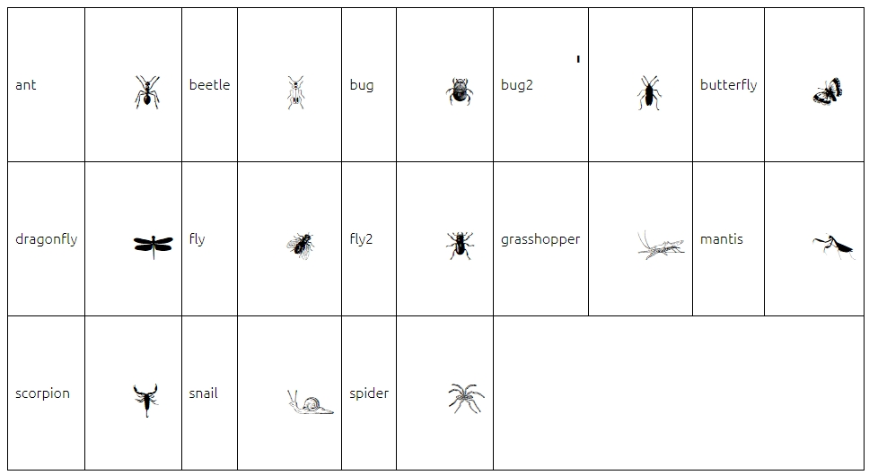
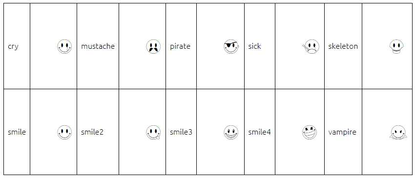
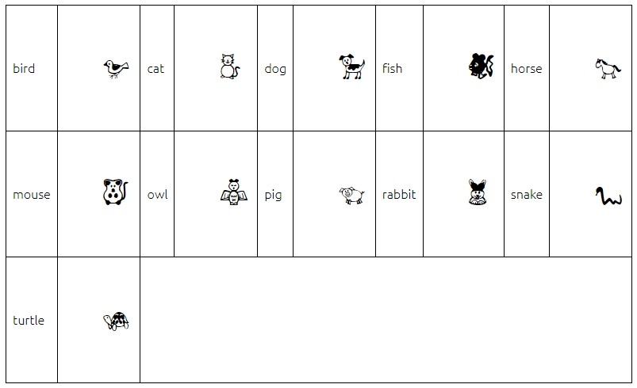
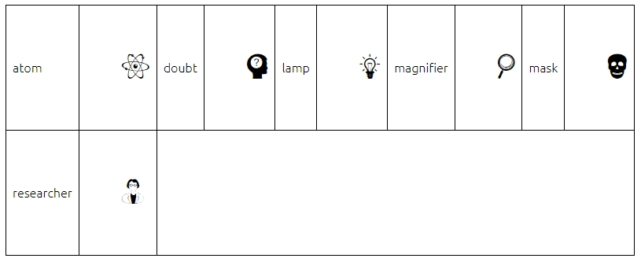
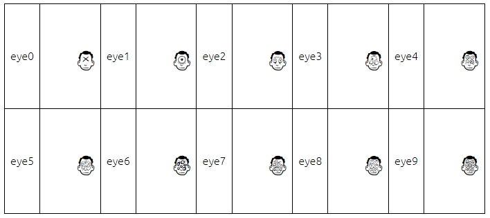

Font
| Chess | Chess icons. |
| Grissom Free | Intellecta Design makes research and development of fonts with historical and artistical relevant forms. |
| JLS Smiles Sampler | Font by Michael Adkins & James Stirling. |
| LL Faces | Head faces of different sizes and internal content. |
| Pet Animals | Pet animals by Zdravko Andreev, aka Z-Designs. |
| Pregnancy | Pregnancy icons. |
| Science | Some science objects and symbols. |
| Freaky Face | Some faces with different number of eyes. |
| Ubuntu | The Ubuntu Font Family are a set of matching new libre/open fonts. |
Chess
File: CHEQ_TT.ttf
Summary: Chess icons.
Source: https://www.dafont.com/chess.font
Symbols:

Grissom Free
File: Grissom Free.ttf
Summary: Intellecta Design makes research and development of fonts with historical and artistical relevant forms. This font is a FREE software for personal and non-commercial use only.
Source: http://www.dafont.com/grissom.font
Symbols:

JLS Smiles Sampler
File: JLS Smiles Sampler.ttf
Summary: Font by Michael Adkins & James Stirling. "Have a nice day!" I can remember that motto and the smiley face from childhood. It was friendly, optimistic little image that became an icon. These days it has been updated and is a collection of emoticons used by cultures world wide. The smiley face can now be friendly, sad, happy, angry, etc. This collection is our fun expression of the smiley face.
Source: http://www.dafont.com/jls-smiles-sampler.font
Symbols:

LL Faces
File: LLFACES2.ttf
Summary: Head faces of different sizes and internal content.
Source: https://www.dafont.com/llfaces.font
Symbols:

Pet Animals
File: Pet Animals.ttf
Summary: Pet animals by Zdravko Andreev, aka Z-Designs. This font is free for personal and non-commercial use.
Source: http://www.dafont.com/pet-animals.font
Symbols:

Pregnancy
File: Pregnancy.ttf
Summary: Pregnancy icons.
Source: https://www.dafont.com/pregnancy.font
Symbols:

Science
File: Science Icons.ttf
Summary: Some science objects and symbols.
Source: https://dl.dafont.com/dl/?f=science
Symbols:

Freaky Face
File: TheFreakyFace.ttf
Summary: Some faces with different number of eyes.
Source: https://www.dafont.com/the-freaky-face.font
Symbols:

Ubuntu
File: Ubuntu-L.ttf
Summary: The Ubuntu Font Family are a set of matching new libre/open fonts. The development is being funded by Canonical on behalf the wider Free Software community and the Ubuntu project. The technical font design work and implementation is being undertaken by Dalton Maag. This font is used in every window displayed by TerraME.
Source: http://font.ubuntu.com
Symbols: